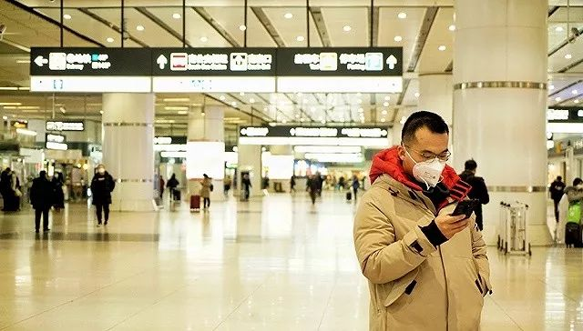
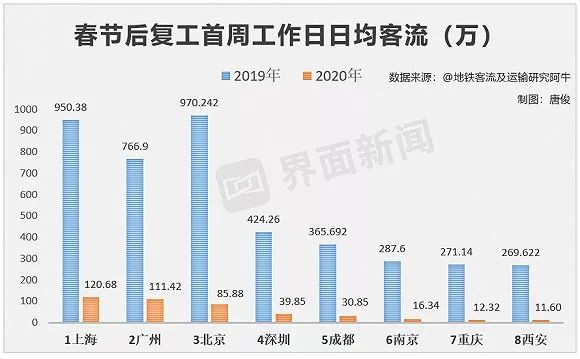

封面报道之产业篇|十堰：“东风城”亟待开工
原文链接 备份链接 封面报道之产业篇： 仙桃：口罩生产过山车 | 荆门：消毒剂企业难复工 | 神农架：10名患者现林区 “为了家人的健康，我肯定不希望东风复工。但东风是把我从小养大的地方，这么停产下去肯定对东风损失很大，我也不希望它垮 …
地铁北京南站，拍摄：蔡星卓
记者：唐俊
“
绝大部分城市地铁客流不足去年同期10%。
”
受疫情影响，今年春运没有返程高峰。从1月29日开始，全国铁路、民航、公路客流同比降幅一直超过80%。虽然政策已经允许复工，但实际上仍有大量上班族未返回工作地。
2月10日是绝大部分省份规定的复工日期。刚刚过去的一周是复工后的第一周，地铁客流数据间接反映了各个城市的复工情况。
由于大量农民工和学生还未返程，已经返回城市工作的上班族，大部分也采取了在家办公的模式，加上市民出行尽量避开人群聚集的公共交通，导致地铁客流并未因复工而大涨，仍旧低于平日客流。
目前中国内地开通地铁的城市中，武汉、徐州、乌鲁木齐、呼和浩特、温州五城地铁处于暂停状态，无客流产生。此前暂停的宁波地铁于2月15日刚恢复运营。
此外，部分城市地铁未完全开放，如有4条地铁线的昆明仅保留了1、2号线及支线7个站点的运营，长春地铁的1、2号线仍暂停运营，这也导致地铁整体客流处于低位。
据博主@地铁客流及运输研究阿牛统计，复工第一周，地铁处于运营状态的城市中，大部分城市日均客流在10万人次以下，只有广州、上海、北京、深圳、成都、南京、重庆、西安8个城市超过10万。而在日常状态下，地铁日均客流超百万的城市就有十多个。
界面新闻记者将2020年春节后复工第一周工作日（2月10日-14日）的地铁客流，与2019年春节后复工第一周工作日（正月初七至十一，即2019年2月11日-15日）客流对比发现，今年复工后的客流远远低于去年同期客流。

日均客流最高的上海只有120.68万人次，相当于去年同期客流的12.7%。而去年同期客流排在第一名的北京，今年复工第一周的客流排第三位，北京到办公室上班的人群数量低于上海和广州。
目前北京和上海的小区实施封闭式管理，同时返回北京的人群必须居家自我隔离14天，这些因素影响两地地铁客流短期内仍不会大幅上涨。
深圳和成都复工第一周日均客流超过了30万，但也只占去年同期不到10%；南京、重庆、西安约占去年同期客流的5%。

从一周整体来看，周一的客流最高，周六和周日有明显下滑，这与平时的客流特征类似。广州地铁在复工第一周的周末，仍然像平日一样，客流反超上海。
其他复工第一周日均客流在10万以下的城市中（济南、无锡、兰州、贵阳暂缺数据），有7个城市客流在5万以上，7个城市客流在1万以下。除厦门、大连等城市之外，绝大部分城市的客流不足去年同期10%，部分城市甚至不足5%。

目前各个城市地铁均推出了相应的防疫措施，除了消毒、测温、通风、加大发车频率等常见措施，西安、深圳等城市还实行实名制乘车，杭州地铁则要求乘客乘车前出示由市政府发放的电子健康码。
27城地铁客流数据表明，全国仍未大范围复工，即使复工也是采取远程办公的形式，而非到办公室上班。城市公共交通近期客流会继续低位运行。
未经授权 禁止转载

原文链接 备份链接 封面报道之产业篇： 仙桃：口罩生产过山车 | 荆门：消毒剂企业难复工 | 神农架：10名患者现林区 “为了家人的健康，我肯定不希望东风复工。但东风是把我从小养大的地方，这么停产下去肯定对东风损失很大，我也不希望它垮 …
原文链接 备份链接 当下，在有效防控疫情的同时，需要发挥城市和区域间的协调与合作，防止因各自为战，造成非重点疫区复工复业的困难，影响经济和社会的稳定发展，以及人民生活的安定 文 | 李铁 从1月23日武汉封城以来，除了重点疫区，绝大部分城 …
原文链接 备份链接 经济观察网 记者 杜涛 一周时间！ 这是广东某地一家制造业的管理者阿蓝的时间表，这是他的客户给他的时间，也是他给上游供应商的时间。 2月10日，阿蓝在接受经济观察网采访时表示，现在是一手抓防治（防治新冠肺炎疫情），一手 …
原文链接 备份链接 *************▲*************广州街头，戴着口罩的行人。 （麦圈/图） 全文共2050字，阅读大约需要5分钟。 一场突如其来的疫情，给中国人带来近十年来最长的一个春节假期。随着2月10日的复 …
原文链接 备份链接 _ “不知道那些曾经一起抢出站闸机的人，现在正在遭遇什么？只希望这场疫情早点儿过去。” _ 文 |《财经》记者 王丽娜 袁满 编辑 | 朱弢 疫情之下，每个人的生活都有变化。即便是距离疫情爆发中心武汉千里之外的北京。 …